Right Triangle Trigonometry
We have previously defined the sine and cosine of an angle in terms of the coordinates of a point on the unit circle intersected by the terminal side of the angle:
In this section, we will see another way to define trigonometric functions using properties of right triangles.
Using Right Triangles to Evaluate Trigonometric Functions
In earlier sections, we used a unit circle to define the trigonometric functions. In this section, we will extend those definitions so that we can apply them to right triangles. The value of the sine or cosine function of is its value at radians. First, we need to create our right triangle. Figure 1 shows a point on a unit circle of radius 1. If we drop a vertical line segment from the point to the x-axis, we have a right triangle whose vertical side has length and whose horizontal side has length We can use this right triangle to redefine sine, cosine, and the other trigonometric functions as ratios of the sides of a right triangle.
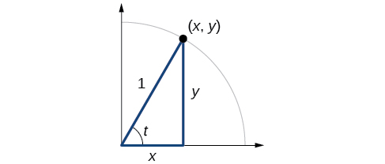
We know
Likewise, we know
These ratios still apply to the sides of a right triangle when no unit circle is involved and when the triangle is not in standard position and is not being graphed using coordinates. To be able to use these ratios freely, we will give the sides more general names: Instead of we will call the side between the given angle and the right angle the adjacent side to angle (Adjacent means “next to.”) Instead of we will call the side most distant from the given angle the opposite side from angle And instead of we will call the side of a right triangle opposite the right angle the hypotenuse. These sides are labeled in Figure 2.
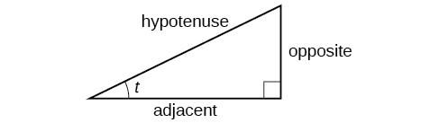
Understanding Right Triangle Relationships
Given a right triangle with an acute angle of
A common mnemonic for remembering these relationships is SohCahToa, formed from the first letters of “Sine is opposite over hypotenuse, Cosine is adjacent over hypotenuse, Tangent is opposite over adjacent.”
Evaluating a Trigonometric Function of a Right Triangle
Given the triangle shown in Figure 3, find the value of
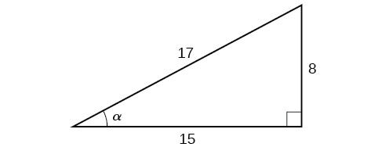
Solution
The side adjacent to the angle is 15, and the hypotenuse of the triangle is 17, so:
Relating Angles and Their Functions
When working with right triangles, the same rules apply regardless of the orientation of the triangle. In fact, we can evaluate the six trigonometric functions of either of the two acute angles in the triangle in Figure 5. The side opposite one acute angle is the side adjacent to the other acute angle, and vice versa.
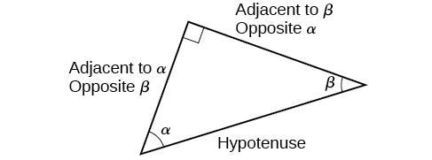
We will be asked to find all six trigonometric functions for a given angle in a triangle. Our strategy is to find the sine, cosine, and tangent of the angles first. Then, we can find the other trigonometric functions easily because we know that the reciprocal of sine is cosecant, the reciprocal of cosine is secant, and the reciprocal of tangent is cotangent.
Evaluating Trigonometric Functions of Angles Not in Standard Position
Using the triangle shown in Figure 6, evaluate and
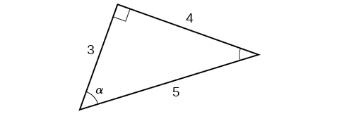
Solution
Finding Trigonometric Functions of Special Angles Using Side Lengths
We have already discussed the trigonometric functions as they relate to the special angles on the unit circle. Now, we can use those relationships to evaluate triangles that contain those special angles. We do this because when we evaluate the special angles in trigonometric functions, they have relatively friendly values, values that contain either no or just one square root in the ratio. Therefore, these are the angles often used in math and science problems. We will use multiples of and however, remember that when dealing with right triangles, we are limited to angles between
Suppose we have a triangle, which can also be described as a triangle. The sides have lengths in the relation The sides of a triangle, which can also be described as a triangle, have lengths in the relation These relations are shown in Figure 8.
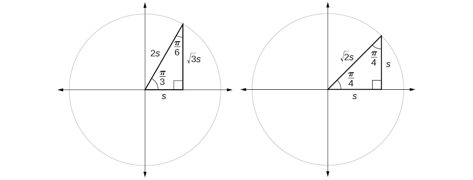
We can then use the ratios of the side lengths to evaluate trigonometric functions of special angles.
Evaluating Trigonometric Functions of Special Angles Using Side Lengths
Find the exact value of the trigonometric functions of using side lengths.
Solution
Using Equal Cofunction of Complements
If we look more closely at the relationship between the sine and cosine of the special angles relative to the unit circle, we will notice a pattern. In a right triangle with angles of and we see that the sine of namely is also the cosine of while the sine of namely is also the cosine of
See Figure 9
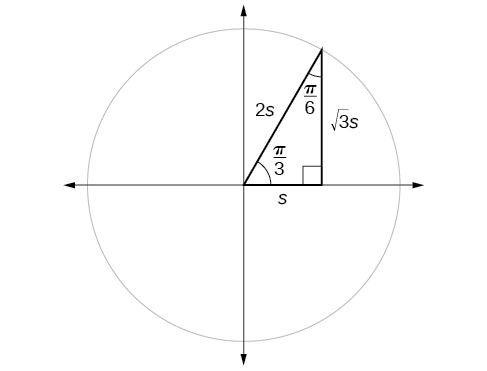
This result should not be surprising because, as we see from Figure 9, the side opposite the angle of is also the side adjacent to so and are exactly the same ratio of the same two sides, and Similarly, and are also the same ratio using the same two sides, and
The interrelationship between the sines and cosines of and also holds for the two acute angles in any right triangle, since in every case, the ratio of the same two sides would constitute the sine of one angle and the cosine of the other. Since the three angles of a triangle add to and the right angle is the remaining two angles must also add up to That means that a right triangle can be formed with any two angles that add to —in other words, any two complementary angles. So we may state a cofunction identity: If any two angles are complementary, the sine of one is the cosine of the other, and vice versa. This identity is illustrated in Figure 10.
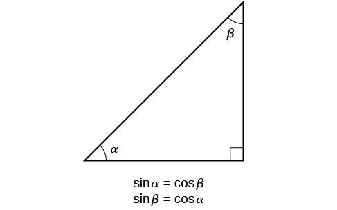
Using this identity, we can state without calculating, for instance, that the sine of equals the cosine of and that the sine of equals the cosine of We can also state that if, for a certain angle then as well.
Using Cofunction Identities
If find
Solution
According to the cofunction identities for sine and cosine,
So
Using Trigonometric Functions
In previous examples, we evaluated the sine and cosine in triangles where we knew all three sides. But the real power of right-triangle trigonometry emerges when we look at triangles in which we know an angle but do not know all the sides.
Finding Missing Side Lengths Using Trigonometric Ratios
Find the unknown sides of the triangle in Figure 11.
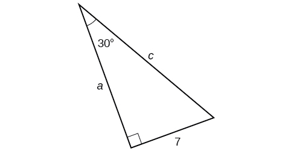
Solution
We know the angle and the opposite side, so we can use the tangent to find the adjacent side.
We rearrange to solve for
We can use the sine to find the hypotenuse.
Again, we rearrange to solve for
Using Right Triangle Trigonometry to Solve Applied Problems
Right-triangle trigonometry has many practical applications. For example, the ability to compute the lengths of sides of a triangle makes it possible to find the height of a tall object without climbing to the top or having to extend a tape measure along its height. We do so by measuring a distance from the base of the object to a point on the ground some distance away, where we can look up to the top of the tall object at an angle. The angle of elevation of an object above an observer relative to the observer is the angle between the horizontal and the line from the object to the observer's eye. The right triangle this position creates has sides that represent the unknown height, the measured distance from the base, and the angled line of sight from the ground to the top of the object. Knowing the measured distance to the base of the object and the angle of the line of sight, we can use trigonometric functions to calculate the unknown height. Similarly, we can form a triangle from the top of a tall object by looking downward. The angle of depression of an object below an observer relative to the observer is the angle between the horizontal and the line from the object to the observer's eye. See Figure 12.
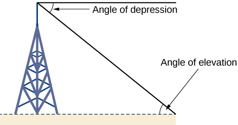
Measuring a Distance Indirectly
To find the height of a tree, a person walks to a point 30 feet from the base of the tree. She measures an angle of between a line of sight to the top of the tree and the ground, as shown in Figure 13. Find the height of the tree.
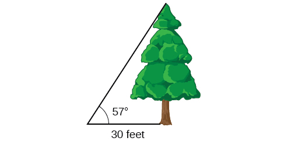
Solution
We know that the angle of elevation is and the adjacent side is 30 ft long. The opposite side is the unknown height.
The trigonometric function relating the side opposite to an angle and the side adjacent to the angle is the tangent. So we will state our information in terms of the tangent of letting be the unknown height.
The tree is approximately 46 feet tall.
Key Equations
| Cofunction Identities |
Key Concepts
- We can define trigonometric functions as ratios of the side lengths of a right triangle. See Example 1.
- The same side lengths can be used to evaluate the trigonometric functions of either acute angle in a right triangle. See Example 2.
- We can evaluate the trigonometric functions of special angles, knowing the side lengths of the triangles in which they occur. See Example 3.
- Any two complementary angles could be the two acute angles of a right triangle.
- If two angles are complementary, the cofunction identities state that the sine of one equals the cosine of the other and vice versa. See Example 4.
- We can use trigonometric functions of an angle to find unknown side lengths.
- Select the trigonometric function representing the ratio of the unknown side to the known side. See Example 5.
- Right-triangle trigonometry permits the measurement of inaccessible heights and distances.
- The unknown height or distance can be found by creating a right triangle in which the unknown height or distance is one of the sides, and another side and angle are known. See Example 6.
Section Exercises
Verbal
For the given right triangle, label the adjacent side, opposite side, and hypotenuse for the indicated angle. 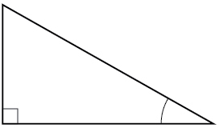
Solution
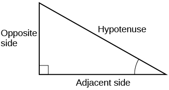
When a right triangle with a hypotenuse of 1 is placed in the unit circle, which sides of the triangle correspond to the x- and y-coordinates?
The tangent of an angle compares which sides of the right triangle?
Solution
The tangent of an angle is the ratio of the opposite side to the adjacent side.
What is the relationship between the two acute angles in a right triangle?
Explain the cofunction identity.
Solution
For example, the sine of an angle is equal to the cosine of its complement; the cosine of an angle is equal to the sine of its complement.
Algebraic
For the following exercises, use cofunctions of complementary angles.
Solution
Solution
For the following exercises, find the lengths of the missing sides if side is opposite angle side is opposite angle and side is the hypotenuse.
Solution
Solution
Solution
Graphical
For the following exercises, use Figure 14 to evaluate each trigonometric function of angle
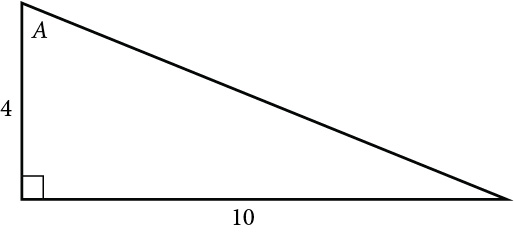
Solution
Solution
Solution
For the following exercises, use Figure 15 to evaluate each trigonometric function of angle
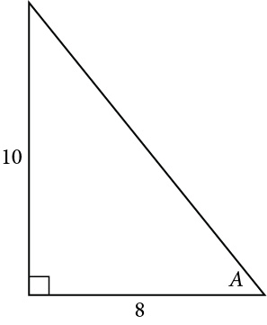
Solution
Solution
Solution
For the following exercises, solve for the unknown sides of the given triangle.
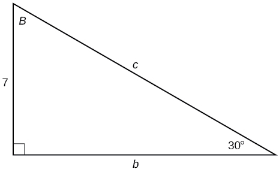
Solution
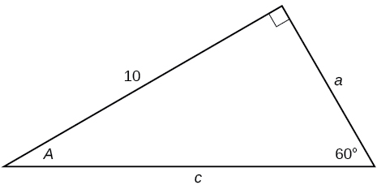
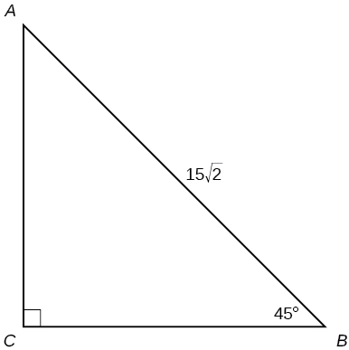
Solution
Technology
For the following exercises, use a calculator to find the length of each side to four decimal places.
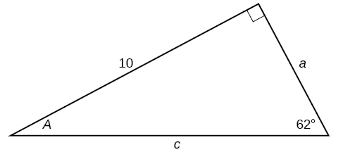
Solution
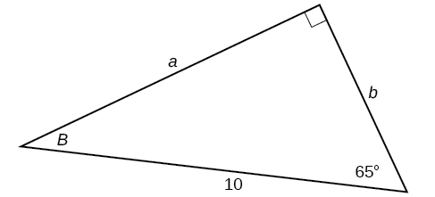
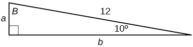
Solution
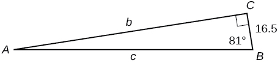
Solution
Solution
Solution
Extensions
Find
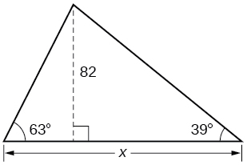
Find
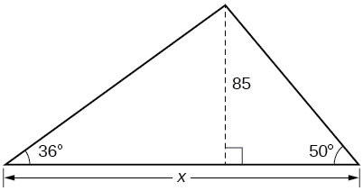
Solution
188.3159
Find
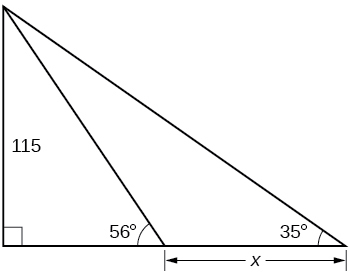
Find
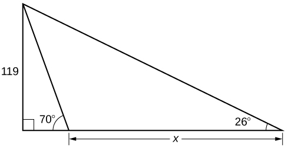
Solution
200.6737
A radio tower is located 400 feet from a building. From a window in the building, a person determines that the angle of elevation to the top of the tower is and that the angle of depression to the bottom of the tower is How tall is the tower?
A radio tower is located 325 feet from a building. From a window in the building, a person determines that the angle of elevation to the top of the tower is and that the angle of depression to the bottom of the tower is How tall is the tower?
Solution
498.3471 ft
A 200-foot tall monument is located in the distance. From a window in a building, a person determines that the angle of elevation to the top of the monument is and that the angle of depression to the bottom of the tower is How far is the person from the monument?
A 400-foot tall monument is located in the distance. From a window in a building, a person determines that the angle of elevation to the top of the monument is and that the angle of depression to the bottom of the monument is How far is the person from the monument?
Solution
1060.09 ft
There is an antenna on the top of a building. From a location 300 feet from the base of the building, the angle of elevation to the top of the building is measured to be From the same location, the angle of elevation to the top of the antenna is measured to be Find the height of the antenna.
There is lightning rod on the top of a building. From a location 500 feet from the base of the building, the angle of elevation to the top of the building is measured to be From the same location, the angle of elevation to the top of the lightning rod is measured to be Find the height of the lightning rod.
Solution
27.372 ft
Real-World Applications
A 33-ft ladder leans against a building so that the angle between the ground and the ladder is How high does the ladder reach up the side of the building?
A 23-ft ladder leans against a building so that the angle between the ground and the ladder is How high does the ladder reach up the side of the building?
Solution
22.6506 ft
The angle of elevation to the top of a building in New York is found to be 9 degrees from the ground at a distance of 1 mile from the base of the building. Using this information, find the height of the building.
The angle of elevation to the top of a building in Seattle is found to be 2 degrees from the ground at a distance of 2 miles from the base of the building. Using this information, find the height of the building.
Solution
368.7633 ft
Assuming that a 370-foot tall giant redwood grows vertically, if I walk a certain distance from the tree and measure the angle of elevation to the top of the tree to be how far from the base of the tree am I?
Review Exercises
Angles
For the following exercises, convert the angle measures to degrees.
Solution
For the following exercises, convert the angle measures to radians.
-210°
Solution
180°
Find the length of an arc in a circle of radius 7 meters subtended by the central angle of 85°.
Solution
10.385 meters
Find the area of the sector of a circle with diameter 32 feet and an angle of radians.
For the following exercises, find the angle between 0° and 360° that is coterminal with the given angle.
Solution
For the following exercises, find the angle between 0 and in radians that is coterminal with the given angle.
Solution
For the following exercises, draw the angle provided in standard position on the Cartesian plane.
-210°
Solution
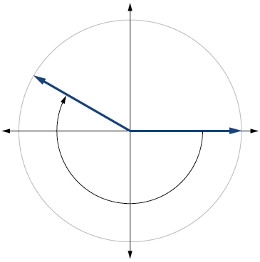
75°
Solution
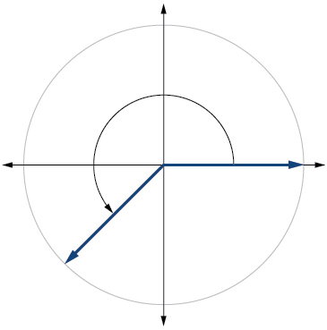
Find the linear speed of a point on the equator of the earth if the earth has a radius of 3,960 miles and the earth rotates on its axis every 24 hours. Express answer in miles per hour.
Solution
1036.73 miles per hour
A car wheel with a diameter of 18 inches spins at the rate of 10 revolutions per second. What is the car's speed in miles per hour?
Unit Circle: Sine and Cosine Functions
Find the exact value of
Solution
Find the exact value of
Find the exact value of
Solution
–1
State the reference angle for
State the reference angle for
Solution
Compute cosine of
Compute sine of
Solution
State the domain of the sine and cosine functions.
State the range of the sine and cosine functions.
Solution
The Other Trigonometric Functions
For the following exercises, find the exact value of the given expression.
Solution
1
Solution
For the following exercises, use reference angles to evaluate the given expression.
Solution
If , what is the
If what is the
Solution
0.6
If find
If find There are two possible solutions.
Solution
or
Which trigonometric functions are even?
Which trigonometric functions are odd?
Solution
sine, cosecant, tangent, cotangent
Right Triangle Trigonometry
For the following exercises, use side lengths to evaluate.
Solution
Solution
0
For the following exercises, use the given information to find the lengths of the other two sides of the right triangle.
Solution
For the following exercises, use Figure 16 to evaluate each trigonometric function.
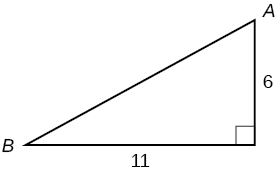
Solution
For the following exercises, solve for the unknown sides of the given triangle.
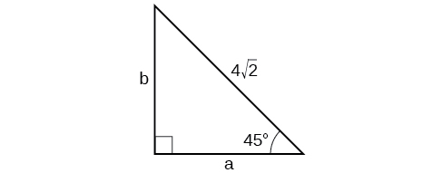
Solution
A 15-ft ladder leans against a building so that the angle between the ground and the ladder is How high does the ladder reach up the side of the building?
Solution
14.0954 ft
The angle of elevation to the top of a building in Baltimore is found to be 4 degrees from the ground at a distance of 1 mile from the base of the building. Using this information, find the height of the building.
Practice Test
Convert radians to degrees.
Solution
Convert to radians.
Find the length of a circular arc with a radius 12 centimeters subtended by the central angle of
Solution
6.283 centimeters
Find the area of the sector with radius of 8 feet and an angle of radians.
Find the angle between and that is coterminal with
Solution
Find the angle between 0 and in radians that is coterminal with
Draw the angle in standard position on the Cartesian plane.
Solution
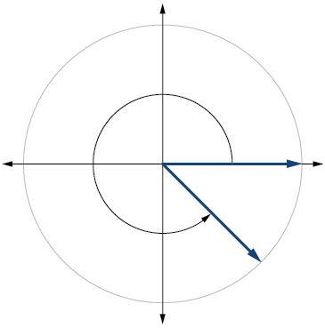
Draw the angle in standard position on the Cartesian plane.
A carnival has a Ferris wheel with a diameter of 80 feet. The time for the Ferris wheel to make one revolution is 75 seconds. What is the linear speed in feet per second of a point on the Ferris wheel? What is the angular speed in radians per second?
Solution
3.351 feet per second, radians per second
Find the exact value of
Compute sine of
Solution
State the domain of the sine and cosine functions.
State the range of the sine and cosine functions.
Solution
Find the exact value of
Find the exact value of
Solution
Use reference angles to evaluate
Use reference angles to evaluate
Solution
If what is the
If find
Solution
Which trigonometric functions are even?
Find the missing angle:
Solution
Find the missing sides of the triangle
Find the missing sides of the triangle.
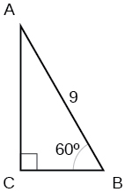
Solution
The angle of elevation to the top of a building in Chicago is found to be 9 degrees from the ground at a distance of 2000 feet from the base of the building. Using this information, find the height of the building.